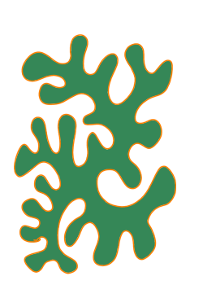

Click and drag the vertices (yellow) and tips of the tangents (green) to adjust the shape of the curve!
Lately I've been studying a coral-shaped motif that appears often in my art. Here's an example:
I'm working towards modeling this shape with bezier curves in quad-shaped tiles. This is the second iteration of the sketch. Here I'm exploring a set of 16 tiles representing all the ways quads can connect to each other. I traverse the grid in the direction that puts the orange lines (indicating where the tiles are connected) to the left.
To view all 16 possible tiles, I connected them into 4 islands as symmetrically as possible. This explains the 4 counter-clockwise loops. There are also 4 small clockwise loops due to cycles in the connection graph.